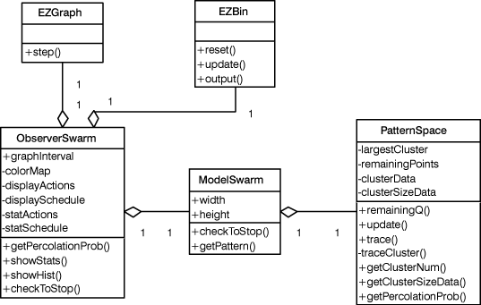

Percolation
Percolation
|
||||||||||
| 前のクラス 次のクラス | フレームあり フレームなし | |||||||||
| 概要: 入れ子 | フィールド | コンストラクタ | メソッド | 詳細: フィールド | コンストラクタ | メソッド | |||||||||
java.lang.Object
パーコレーションの視覚化
2次元正方格子にランダムに点を置いていく。
となりあう点はつながっているとみなす。
点が増えていくと、つながった点による大きなクラスタができる。
空間が無限に大きい場合、点がある密度を超えると、
クラスタのサイズも無限に大きくなることが知られている。
この臨界点において、任意に選んだ格子点が無限に大きなクラスタの一部になっている確率
を浸透確率という。これは、最大クラスタに含まれる点の数と、全格子点の数の比である。
ここでは空間が有限の場合のシミュレーションで、浸透確率を調べる。
参考：小田垣孝「つながりの科学」・「パーコレーションの科学」

| コンストラクタの概要 | |
Percolation()
|
|
| メソッドの概要 | |
static void |
main(java.lang.String[] args)
|
| クラス java.lang.Object から継承したメソッド |
clone, equals, finalize, getClass, hashCode, notify, notifyAll, toString, wait, wait, wait |
| コンストラクタの詳細 |
public Percolation()
| メソッドの詳細 |
public static void main(java.lang.String[] args)
|
||||||||||
| 前のクラス 次のクラス | フレームあり フレームなし | |||||||||
| 概要: 入れ子 | フィールド | コンストラクタ | メソッド | 詳細: フィールド | コンストラクタ | メソッド | |||||||||